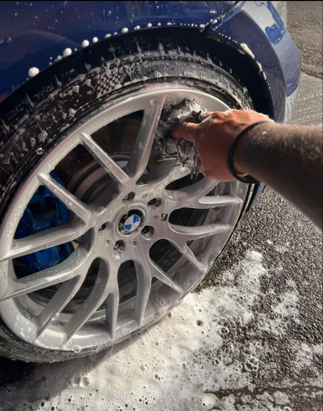
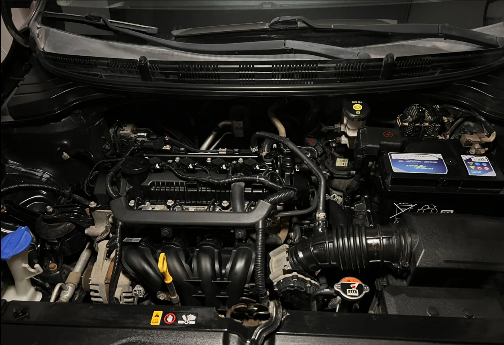
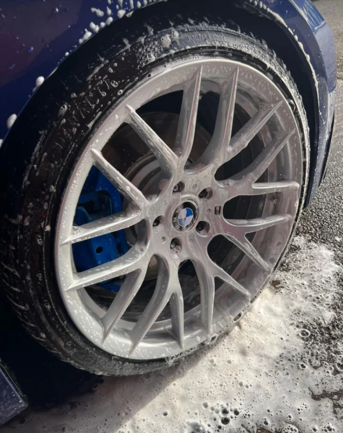
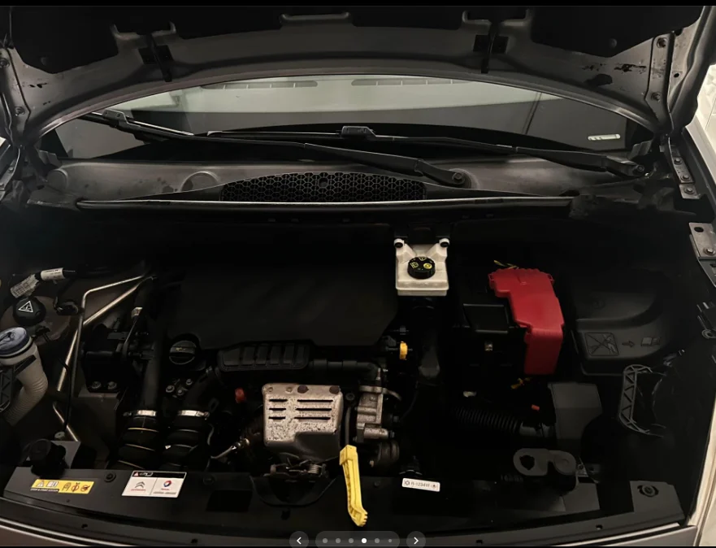
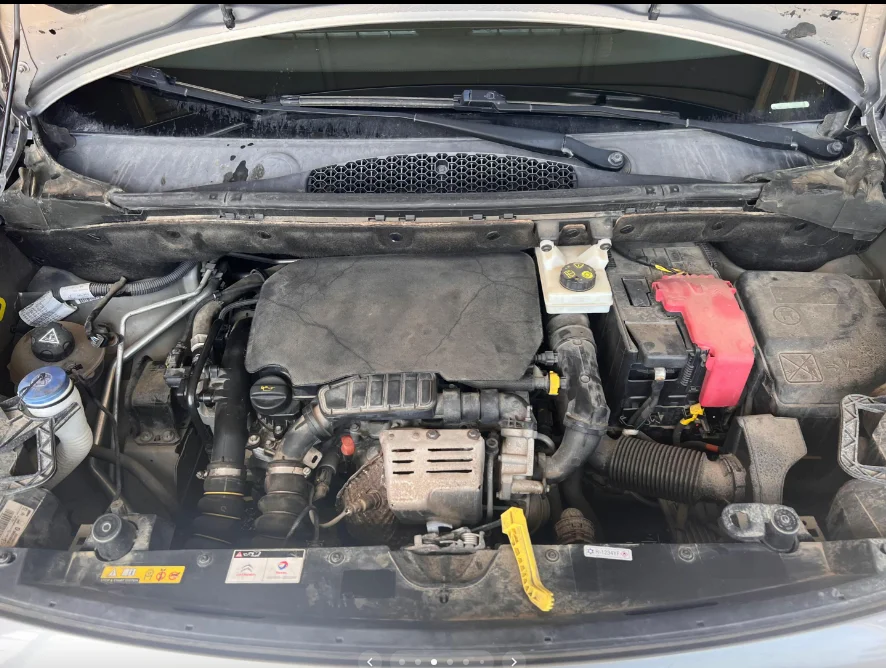
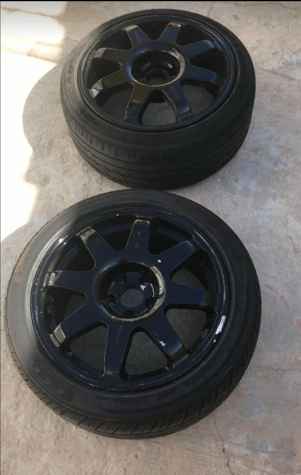

01 /CUIDADO AL MÁXIMO NIVELDETAILING
DETAILING
PREMIUM
Corrección de pintura, protección cerámica y limpieza integral. Recupera ese primer día.
PREPARANDO EL BOX

VECINDARIO · GRAN CANARIA
Llevamos tu máquina al siguiente nivel. Detailing premium y mecánica de precisión para quienes sienten el motor de otra manera.
01 / LO QUE HACEMOS
Desde el primer diagnóstico hasta el último reflejo. Cada detalle cuenta.

Corrección de pintura, protección cerámica y limpieza integral. Recupera ese primer día.
Diagnóstico preciso y mantenimiento para que cada kilómetro cuente.
Devuelve la claridad a tus faros. Más visibilidad, mejor presencia.
Control en cada curva. Revisión de suspensión y cuidado de llantas.

EL CUIDADO ESTÁ EN EL PROCESOEL ADN BCMOTORSPORT
Una pintura que vuelve a reflejar. Un motor que responde. La tranquilidad de saber qué necesita tu vehículo y por qué.
ENCUENTRA TU PUNTO DE PARTIDA
Tres decisiones. Una recomendación para empezar a hablar. El diagnóstico final siempre se realiza sobre el vehículo.
ELIGE CÓMO QUIERES CUIDARLO
Tres enfoques de detailing. El alcance y el precio se acuerdan tras valorar el vehículo.
Para mantener un vehículo cuidado en el día a día.
Para pintura apagada y defectos superficiales.
Para facilitar el cuidado y conservar el acabado.
SIN ATAJOS
Tú sabes qué se hace. Nosotros cuidamos cómo se hace.
Nos cuentas tu vehículo, tu objetivo y cuándo te viene bien.
Revisamos el estado y acordamos el alcance antes de empezar.
Tratamiento y atención a cada punto del proceso.
Revisión final contigo y consejos para el siguiente kilómetro.
SIN FILTROS. CON TRABAJO.
Mueve la línea y descubre el cambio. Ahora con fotografías del taller: del estado inicial al acabado final.


PROYECTO EN TRES ACTOS
Sigue el recorrido de estas llantas: estado inicial, preparación y acabado. Un trabajo, visto desde dentro.

EL MOTOR, DE CERCA
26 fotografías. Interiores, motores, llantas y acabados. Explora los trabajos de BcMotorsport, sin perderte ningún detalle.
ANTES DE ARRANCAR
Resolvemos las dudas que suelen surgir antes de pedir cita.
Puedes registrar una solicitud y una fecha preferida. La cita queda confirmada únicamente cuando el taller aprueba el día y la hora en tu seguimiento.
Depende del tamaño, el estado del vehículo y el alcance acordado. La solicitud no implica un cobro ni obliga a contratar.
No. Depende de su profundidad y del espesor de pintura disponible. Primero se valora qué corrección puede hacerse sin comprometer el acabado.
Facilita el mantenimiento, pero no hace la pintura inmune a arañazos, golpes o lavados incorrectos. El cuidado posterior sigue siendo necesario.
Sí. Puedes seleccionar moto en la solicitud y describir el mantenimiento o cuidado que necesitas. El taller valorará su viabilidad.
En Mis solicitudes puedes revisar el estado y las notas del taller. Puedes cancelar mientras esté recibida o confirmada, antes de que empiece el trabajo.
04 / TU PRÓXIMA PARADA
Cuéntanos qué necesita tu coche o moto. Elegimos contigo el tratamiento adecuado.
VECINDARIOEMPIEZA TU PRÓXIMO CAPÍTULO
Elige servicio, cuéntanos qué conduces y propón una fecha. Al enviar, prepararemos el mensaje para WhatsApp o email sin guardar datos en un servidor.
Sin pago online. Sujeta a valoración y confirmación del taller.